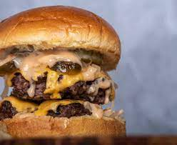

Burger

A Bountiful Burger
Learn how to make succulent beef burgers with just four
Ingredients. An easy recipe for perfect homemade patties
Ingredients
- 1 small onion, diced
- 500g good-quality beef mince
- 1 egg
- 1 tbsp vegetable oil
- 4 burger buns
- A shed load of cheese!
Steps
- Tip 500g beef mince into a bowl with 1 small diced onion and 1 egg, then mix
- Divide the mixture into four. Lightly wet your hands. Carefully roll the mixture into balls
- Set in the palm of your hand and gently squeeze down to flatten into patties about 3cm thick
- Make sure all burgers are the same thickness so that they will cook
- Fry those suckers up!